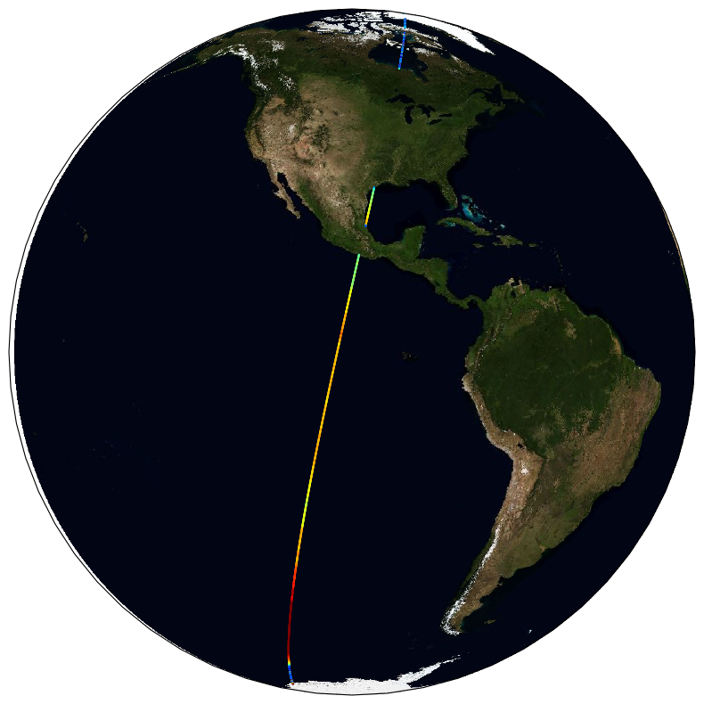

4. Nadir-altimetry datasets#
The main geophysical parameter provided by altimeters for sea state is the significant wave height (SWH). Three kinds of datasets are delivered, as summarized in table Table 4.1
Product |
L2 Pre-Processed Section 4.6 |
L3 Multi-Mission Section 4.7 |
L4 Multi-Mission Section 4.8 |
|---|---|---|---|
Acronym |
L2P |
L3 |
L4 |
Description |
SWH derived from Level 1 source data (wave forms) for a single mission but averaged at 1 Hz, typically in a satellite projection with geographic information. These expert data form the fundamental basis for higher-level products and require ancillary data and uncertainty estimates. |
SWH measurements from L2P of different missions stitched together into daily files |
SWH measurements combined from a multiple missions into a monthly space-time grid. |
Grid specification |
Along-track observations |
Along-track observations |
Global regular lat-lon grid, 1°x1° |
Temporal resolution |
1 second averages along full or half orbits |
1 second averages into daily files |
Monthly |
Spatial resolution |
6-7 km |
6-7 km |
1°x1° |
Coverage |
Mission specific |
Native to data stream |
Global |
4.1. L2P#
L2P Along-track files from altimetry missions provide SWH measurements separated per satellite and pass (half-orbit), sometimes full orbit or sections of orbit (depending on the source provider for the altimeter data), including all measurements with flags, corrections and extra parameters from other sources. These are expert products with rich content and no data loss.
{kind=link}

Fig. 4.1 Example of a L2P coverage#
4.2. L3#
Edited merged daily dataset retaining all valid and good quality measurements from all L2P altimeters over one day (one daily file), with simplified content (only a few key parameters). This is close to what is delivered in NRT or Multi-Year time series by CMEMS project[1].

Fig. 4.2 Example of a multi-mission L3 coverage#
4.3. L4#
Gridded products averaging valid and good measurements from all available altimeters over a fixed resolution grid (1°x1°) on a monthly basis. This dataset is meant for statistics, and visualisation through the CCI toolbox.

Fig. 4.3 Example of a multi-mission L4 coverage#